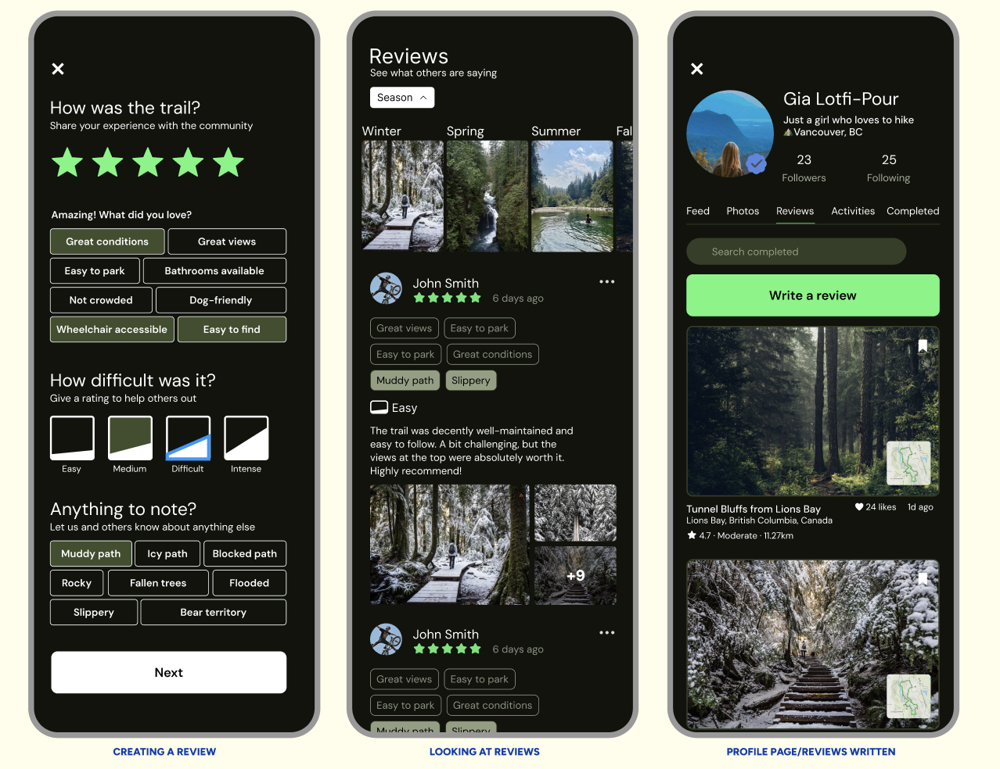
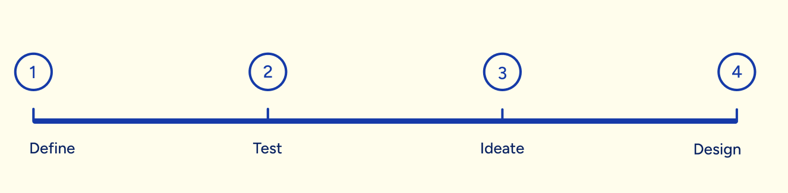
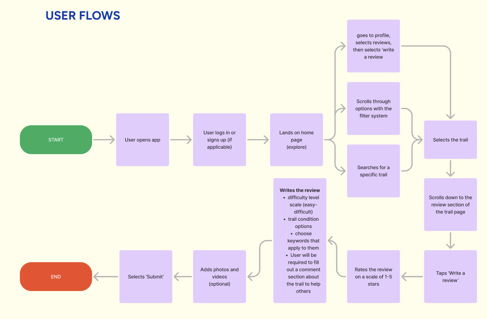
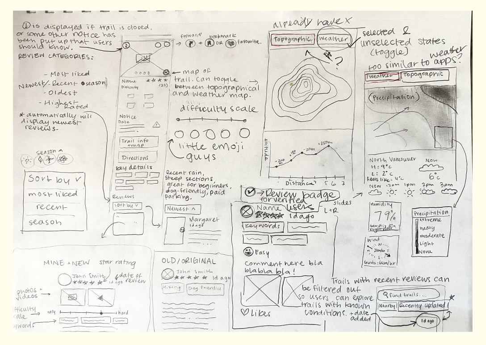
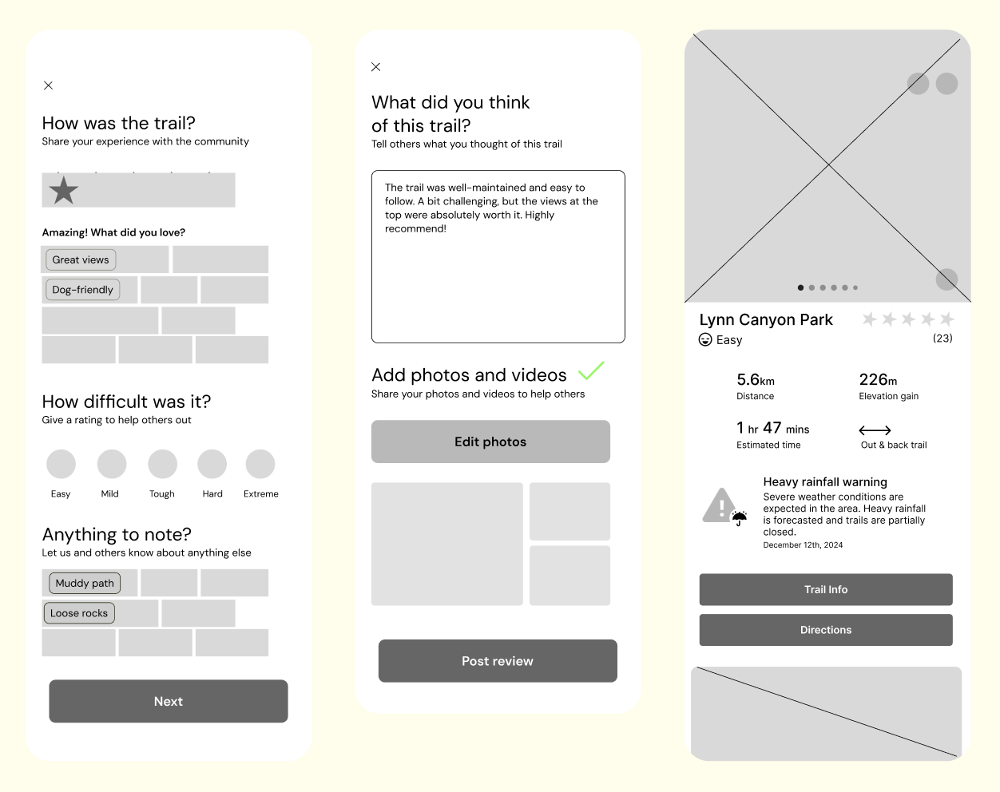

Revamping the AllTrails review system to transform hikers’ experience.

This user experience project is a study and revamp of the AllTrails app, with the aim of helping people feel more confident about a hike before going.
People who use AllTrails rely heavily on the review system to make decisions on which trail to explore. A lack of verified reviewers and photos in the review area limited the amount of trust users had in the app and provided an opportunity for me to improve on.
UX Researcher UX Designer
Independant project
8 weeks
I created a review system with brand new categories for users to make more detaled reviews, post photos and videos on their reviews, and become a verified user that people can follow. This solution provides users a sense of freedom and empowerment, enabling them to confidently write reviews and explore their area in a new way.
The process for this project was very iterative, but here’s the general process.

In the define phase, I focused on understanding the problem and the users. I created a list of assumptions about the current audience, then conducted interviews and created personas to pull out key insights.
In the test phase, I set off to conduct one-on-one user interviews, and created user personas to pull out key insights and common themes.
Moving into ideation, I created a set of visions and goals and strategy statement to better understand the design scope, and explore possible design solutions.
In the design phase, I did what you can imagine- design! I began with a set of sketches, then eventually moved onto mockups.
This project created the opportunity for AllTrails users to have a customizable experience when creating a review, increased user trust with the implementation of photo and video reviews, and allows users to create a catalogue of past experiences to look back at their past hikes and reminisce.
I used various insight tools that helped me collect and interpret data to better the user experience by identifying user behaviours, preferences, and pain points. Let’s check them out!
This is a user flow of the AllTrails enhanced review system, and was created to ensure that all points of the flow were completed, as well as pinpointing any missing pages or areas of potential confusion.

My wireframes began as a series of sketches where I could brain dump any and all ideas and room for improvement. Drawing things loose and fast really helps get the creative juices flowing!

From there, I moved on to mid-fidelity wireframes on Figma to begin putting everything together.

This project gave me the opportunity to explore the process of a UX Designer, from defining the problem to creating solutions and implementing them. I learned the importance of testing assumptions and hypotheses before implementing them to eliminate bias, leveraging tools such as user flows and user stories to gain a deeper understanding of peoples wants, needs, barriers, goals, and frustrations, and starting with a multitude loose concepts and ideas before committing to a final design. Overall, this was one of the first projects I completed in University and it helped me gain a way better understanding of the design process and built my skills as a designer.